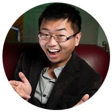

Tian-Yuan Zhao
 Innovate or Stagnate.
UI/UX Designer/Researcher and Systems Engineering Student
I'm a versatile Management & Systems Engineering student at the University of Toronto with a minor in Business Engineering and will be graduating in 2018. I possess competencies, passions, and sensitivities in the Engineering - UI/UX/IX Design and Front-End Web Development, Product Management, and Data Science/Analysis/Mining, the Arts - writing, singing, dancing, piano playing, voice acting, acting, composing/arranging, photography, and videography, and Business - tech entrepreneurship, social entrepreneurship, strategic planning, public speaking, hustling, and growth hacking realms. My ultimate dream is to become a polymath or Renaissance Man.
In other words - I'm a baby unicorn or generalist. My qualifications are diverse; I possess a well-rounded set of skills, knowledge, and passions. This ultimately enables me to possess the qualities of a product manager.
Who am I?
Currently I'm a UI/UX Developer and am aspiring to be a professional in the technology world so I can not only contribute to an existing small/mid-sized enterprise but to build my own startup one day as well.
“The patterns are simple, but followed together, they make for a whole that is wiser than the sum of its parts. Go for a walk; cultivate hunches; write everything down, but keep your folders messy; embrace serendipity; make generative mistakes; take on multiple hobbies; frequent coffeehouses and other liquid networks; follow the links; let others build on your ideas; borrow, recycle; reinvent. Build a tangled bank.” ~ Steven Johnson, Where Good Ideas Come From: The Natural History of Innovation.
Have questions?
Email: tianyuan.zhao@mail.utoronto.ca
Twitter: @tosfan4ever